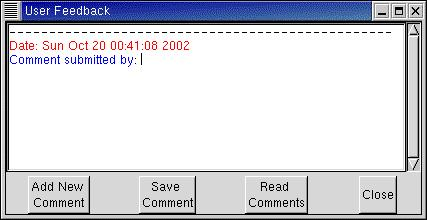

Perhaps one of the most important functions! A software effort of this magnitude
will probably contain quite a few errors or unpleasant features that need to be
cured. Possibly you have suggestions for further improvements or features. The Feedback
function allows you to write your comments. The comments are saved in a file
user_comments.txt (in the same directory from which LAMPS was started).
The file can be sent by email to DrAmbar@gmail.com after
there are several substantial comments.